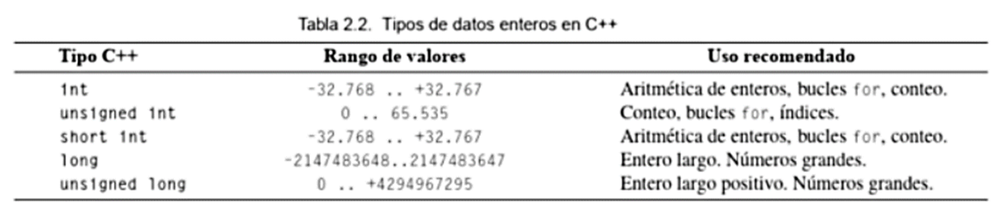
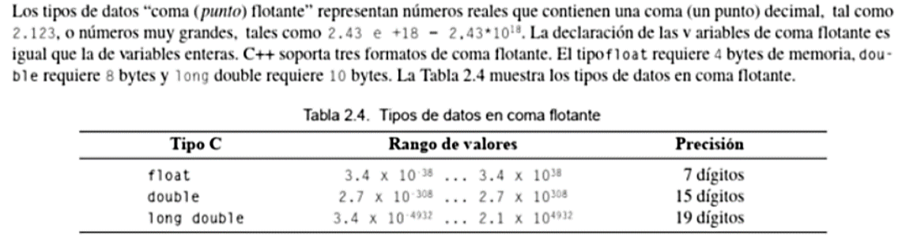
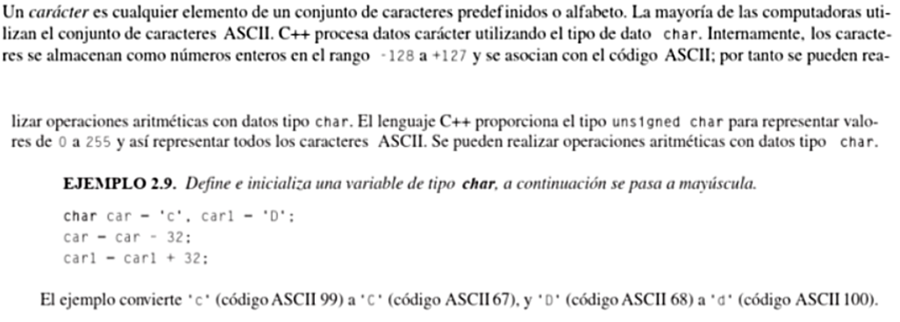
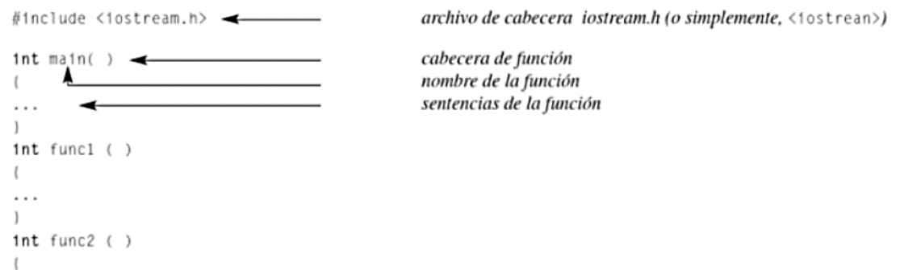
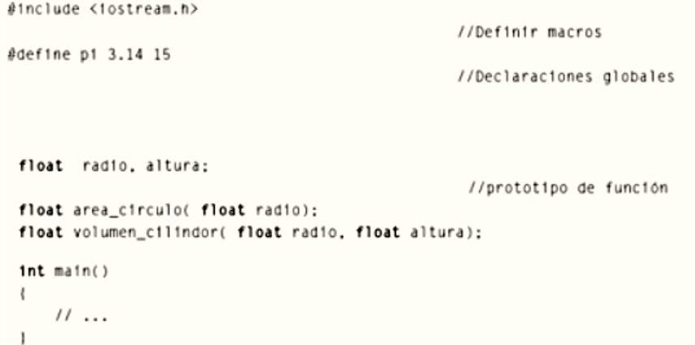
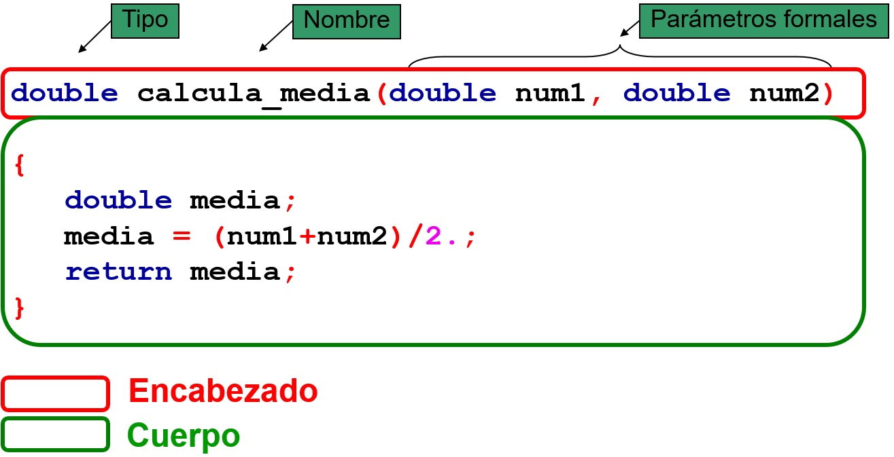

Modulo 3
Conceptos basicos de informatica
Visual Studio 2019 C++
14-05-2022
Lenguaje C++
El lenguaje C++ fue diseñado en 1979 por Bjarne Stroustrup, con el propósito de extender el lenguaje de programación C, con mecanismos que permiten manipular objetos. Por lo que, desde el punto de vista de otros lenguajes orientados a objetos, C++ es un lenguaje hibrido entre C y otros lenguajes POO (Orientado a objetos) como Simula. Los antepasados le permiten al lenguaje C++ tener una sintaxis de C, programación POO, un lenguaje atipado que se debe saber lo que se hace o sino no funciona el código, cuenta con una biblioteca estándar y control de excepciones.
Tipos de datos
- Enteros
Estos datos representan un valor entero, por lo que se pueden manipular con las tipicas operaciones matematicas (suma, resta, divicion, multiplicacion, etc).

- Flotantes
Los caracteres de tipo flotantes son los caracteres que permiten almacenar numero decimal, estos por consecuencia consumen mucha memoria, por lo que no se deberían de usar a menos que se tenga asegurado que puede existir un valor decimal.

- Caracter (char)
Son los tipos de datos que almacenan caracteres ósea letras, palabras, caracteres especiales.

Estructura y ejemplos C++
Directivas del procesador y declaraciones globales
El procesador en un programa que usa C++ consta de directiva, que vendrían a ser instrucciones al compilador, estas tienen la característica que empiezan son el signo de libro (#) y como son instrucciones no termina en punto y coma.#include es la directiva que indica al compilador que lo que lea el archivo fuente (archivo cabecera) que viene a continuación, inserte su contenido en la posición donde esta dicha directiva, las instrucciones son de la forma #include“ numbrearch.h”. Otra directiva es #define que indica al procesador que defina un item de datos u operaciones para el programa.
Las declaraciones globales indican al usuario que las constante o variables declaradas son comunes y usadas en todas las funciones de su programa. La declaraciones globales pueden declarar variables, además de declaración de prototipo de función (es un declaración de una función y consiste en una definición de la función sin cuerpo y terminada en punto y coma).
Ejemplo
Funciones
Las funciones son bloques de códigos que se usa para dividir el programa en pequeñas partes con el fin de ser mas eficientes con las líneas de código y evitar repeticiones de código. C++ proporciona funciones predefinidas denominadas funciones de biblioteca, estas requieren que se incluya el archivo dende ve el archivo. En cambio, hay otras funciones que el mismo usuario puede crear, para acortar código, para esto el usuario debe de asignarle un nombre y los parámetros que solicita la función.Después que el usuario llame a la función, el código asociado con ella se ejecuta. Para que en cambio las funciones creadas por el usuario se ejecuten se requiere de una declaración o prototipo en el programa donde se desea que se ejecute el código de la función. Pero todas las funciones de un programa C++ están controladas por las función main(), que es como la función cuerpo, la que ejecuta el último y más importante código para el programa.

Secuencias de escape
Son caracteres que se les antepone \ para crear una alteración dentro de la organización del texto que se encuentra en la consola.- /n: Este se usa para hacer saltos de líneas en el texto.
- \t: Este se usa para hacer una tabulación horizontal.
- \b: Este se le conoce como “Retorno del carro”, lo que hace que al ponerlo al final de un bloque de texto el carro o escritor de la consola vuelve al inicio de este bloque y sobrescribe el siguiente bloque.
- \r: Este es un retorno del carro, pero solo es de un carácter.
- \f: Cuando la secuencia de texto llega con esta secuencia, se cambia al siguiente formulario o página.
- \a: Este genera un sonido de campana cuando la secuencia de texto llega a ese punto.
- \'\': Sirve para poner comillas simples en el bloque de texto sin afectar el código.
- \"\": Sirve para poner comillas en el bloque de texto sin afectar el código.
- \\: Sirve para poner diagonal invertida en el bloque de texto sin afectar el código.
- \?: Sirve para colocar el signo de “?” en el texto.
- \oo: Este es usado para ingresar un carácter dependiendo su número ASCII en forma octal.
- \xhh: Este es usado para ingresar un carácter dependiendo su número ASCII en forma hexadecimal.
Lista de actividades
|

© 2022 Grupo5
© Derechos reservados